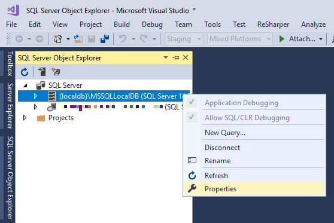

Entity Framework Core I-II.¶
Az Entity Framework leképezési módszerei¶
Az objektum-relációs (OR) leképzés (mapping) két fő részből áll: az egyik az adatbázis séma, a másik pedig egy menedzselt kódbéli objektummodell. Esetünkben a C# kódban lévő osztályokat képezzük le adatbázisbeli objektumokká, ezt hívjuk Code-First mapping módszernek. A másik irány is lehetséges, ha már van egy adatbázis sémánk, akkor azt is leképezhetjük Code-First modellé. Ezt a folyamatot Reverse Engineered Code-First nek vagy scaffolding--nak hívjuk (ez utóbbival nem foglalkozunk ezen gyakorlat keretében).
Akárhogy is, az Entity Framework Core (EF) mint OR leképező eszköz (ORM) használatához az alábbi összetevőkre van szükség:
- objektummodell kódban
- relációs modell az adatbázisban
- leképezés (mapping) az előbbi kettő között, szintén kódban megadva
- maga az Entity Framework Core, mint (NuGet) komponens
- Entity Framework Core kompatibilis adatbázis driver (provider)
- adatbázis kapcsolódási adatok, connection string formátumban
A Code-First leképezési módszer¶
A Code-First módszer lényege, hogy elsőként az OO entitásokat definiáljuk egyszerűen programkódban, majd a leképezést szintén programkódban. A leképezés alapján az EF eszközök képesek az adatbázis létrehozására, inicializálására és a séma változáskövetésére is (lásd lentebb a Code-First Migrations részt).
Az entitások definiálása¶
Készítsünk egy .NET 8 konzolos alkalmazást (csak ne EF legyen a neve), majd a projekten belül hozzunk létre egy Entities nevű mappát. Adjunk hozzá a mappához egyszerű osztályokat az alábbi sémának megfelelően:
Product(Id:int,Name:string,UnitPrice:int)Order(Id:int,OrderDate:DateTime)Category(Id:int,Name:string)
Az osztályok legyenek publikusak, az attribútumok pedig egyszerű auto-implementált propertyk (prop snippet).
A string típusú property-k esetén figyelmeztet a fordító, hogy nem nullozható referencia típusú property inicializáció után is null értékű lehet.
Ennek kivédésére az ajánlott módszer a required kulcsszó használata a property előtt, ezzel kiválthatóak a felesleges konstruktorok, amelyben csak a kötelezőség miatt várunk el paramétereket és állítjuk be a propertyk értékét.
EF Core és konstruktorok required nélkül
A fenti megoldás nem működött még C# 11-ben, így ott konstruktort kellett készítenünk. Ezt a konstruktort az EF is fogja hívni, így neki automatikusan tudnia kell, hogy melyik paraméter melyik tulajdonságot állítja - pedig ez a konstruktor szignatúrájából alapesetben nem kikövetkeztethető. Emiatt önkéntesen tartanunk kell magunkat ahhoz, hogy a konstruktorparaméter nevének és a property nevének egyeznie kell, kivéve, hogy a paramétere neve kezdődhet kisbetűvel is (camel casing).
Példaként így néz ki a Product konstruktor:
public Product(string name)
{
Name = name;
}
Quick Action
A Visual Studio Quick Action-ként fel szokta ajánlani a Generate constructor [konstruktorfejléc] vagy Add parameter to [konstruktorfejléc] gyors kódgenerálási lehetőségeket, amivel létrehozhatjuk vagy bővíthetjük a szükséges konstruktort.
Mapping és egyéb metaadatok megadása I.¶
Eddig megadtuk az entitás nevét, a relációs attribútumok nevét és típusát, azonban ezen felül még sok mindent lehet/kell megadni: az entitás elsődleges kulcsa, idegen kulcsok, relációk, kényszerek és egyéb mapping információk (pl. hogy mi legyen a relációs attribútum oszlopneve az adatbázisban). A Code-First stratégia kétfajta módszert is kínál ezek megadására. Az egyik módszer, hogy C# attribútumokat helyezünk az entitásosztályok különböző részeire, a másik, hogy ún. fluent jellegű kódot alkalmazunk. Ez utóbbi módszer elsőre furcsán néz ki, de többet tud (van, amit attribútummal nem lehet megadni).
A fenti két módszert kiegészíti a konvenció alapú konfiguráció, amikor az EF a rendelkezésekre álló adatokból automatikusan következteti ki a metaadatokat: például gyakori, hogy az elsődleges kulcs neve tartalmazza az id szöveget. Az EF tehát a konvenció alapján kitalálhatja, hogy melyik ez elsődleges kulcs oszlop. Ha valamit rosszul találna ki, vagy változtatni akarunk a kitalált neveken, akkor azt az attribútumos vagy a fluent megadással tehetjük meg.
Saját konvenciók
EF Core 7 óta saját konvenciókat is megadhatunk lásd bővebben.
Elsőként azt fogjuk megnézni, hogy mit talál ki az EF, ha semmi plusz adatot nem adunk meg.
Relációk¶
A fő entitások közötti kapcsolatokat mutatja sematikusan az alábbi ábra:
{kind=link}
A relációkat idegen kulcs propertyk és navigációs propertyk reprezentálják. Az idegen kulcs propertyk típusa a kapcsolat másik végén lévő entitás kulcsának típusa. A navigációs propertyk típusa pedig a kapcsolat másik végén lévő entitás típusa vagy ilyen típusú kollekció.
Egy konkrét kapcsolat esetében: a Product-Category egy-többes kapcsolathoz egy idegen kulcs property és egy navigációs property tartozik a Product osztályban és egy kollekció típusú navigációs property a Category-ban.
A többes navigációs property-k legyenek csak olvashatók és a típusuk legyen ICollection<>.
Navigációs propertyk
Általánosságban nem kötelező egy kapcsolat mindkét oldalán navigációs property-t vagy külső kulcsot felvenni, de erősen javasolt és mindig jó, ha van. Az entitáson végzendő műveleteket egyszerűsíti, illetve a konvenciós logika is következtet belőle.
A navigációs propertyk referencia típusúak, így foglalkoznunk kell a nullozhatóság kérdésével.
Ha a kapcsolat modellezési szempontból nem kötelező (például ha nem várnánk el, hogy minden terméknek legyen megadva a kategóriája), akkor a navigációs property típusa is legyen értelemszerűen nullozható.
Ha a kapcsolat kötelező, akkor az ajánlott eljárás, hogy a navigációs property típusa ne legyen nullozható - viszont ekkor kezdeti értéket kell adnunk.
Gyakori eset, hogy egy entitást betöltünk adatbázisból, de a hozzá kapcsolódó entitás(oka)t nem, ilyenkor mégis a null érték lenne a megfelelő.
Emiatt az egyik ajánlott módszer, ha a propertyt null forgiving operátorral inicializáljuk null értékre.
Példa: public Category Category { get; set; } = null!;.
Az Order-Product több-többes kapcsolatokhoz hozzuk létre a kapcsolótáblának megfelelő entitást is, ami egy-egy Product és Order közötti kapcsolatot reprezentálja.
OrderItem(Id:int,ProductId:int,OrderId:int,Quantity:int)
Kapcsoló entitás
Nem kötelező létrehozni osztályt a kapcsolótáblának, konfigurációval is lehet érni, hogy a kapcsolótábla létrejöjjön és az EF megfelelően használja.
Ezt a módszert akkor érdemes követni, ha a kapcsolótábla csupán technikai tehertétel, de ha például extra adatot is tárol, esetünkben a rendelt mennyiséget (Quantity), akkor jobban követhető kódot eredményez, ha explicit létrehozzuk a kapcsolótáblának megfelelő entitástípust.
Az így kialakult modell:
{kind=link}
Kódként:
public class Category
{
public int Id { get; set; }
public required string Name { get; set; }
public ICollection<Product> Products { get; } = new List<Product>();
}
public class Order
{
public int Id { get; set; }
public DateTime OrderDate { get; set; }
public ICollection<OrderItem> OrderItems { get; } = new List<OrderItem>();
}
public class Product
{
public int Id { get; set; }
public required string Name { get; set; }
public int UnitPrice { get; set; }
public int CategoryId { get; set; }
public Category Category { get; set; } = null!;
public ICollection<OrderItem> ProductOrders { get; } = new List<OrderItem>();
}
public class OrderItem
{
public int Id { get; set; }
public int Quantity { get; set; }
public int ProductId { get; set; }
public Product Product { get; set; } = null!;
public int OrderId { get; set; }
public Order Order { get; set; } = null!;
}
Vegyük észre, hogy eddig semmilyen EF specifikus kódot nem írtunk, a modellünk sima ún. POCO osztályokból áll.
Kapcsolat az adatbázissal¶
DbContext - NuGet¶
Az entitásokat definiáltuk, a mapping-et az EF eszére bíztuk, a következő lépés az adatbázisséma létrehozása a mapping alapján, amit képes az EF migrációs eszköze megoldani.
Műveletet az ún. kontext-en keresztül tudunk végezni.
Érdemes saját kontext típust létrehozni, amit az alap DbContext-ből származtatunk.
Eddig még nem is írtunk semmilyen EF specifikus kódot, most viszont már kell a DbContext típus, így NuGet-ből hozzá kell adnunk a Microsoft.EntityFrameworkCore.SqlServer csomagot.
Nem ez a csomag tartalmazza a DbContext-et, viszont függőségként hivatkozza (Microsoft.EntityFrameworkCore).
NuGet csomagok telepítése
A NuGet csomagok telepítéséhez segítség a dokumentációban.
NuGet verziók
Olyan csomagoknál, ahol a verziószámozás követi az alap keretrendszer verziószámozását, törekedjünk arra, hogy a csomagok verziói konzisztensek legyenek egymással és a keretrendszer verziójával is - akkor is, ha egyébként a függőségi szabályok engednék a verziók keverését. Ha a projektünk például .NET 8-os keretrendszert használ, akkor az Entity Framework Core és egyéb extra ASP.NET Core csomagok közül is olyan verziót válasszunk, ahol legalább a főverzió egyezik, tehát valamilyen 8.x verziót. Ez nem azt jelenti, hogy az inkonzisztens verziók mindig hibát eredményeznek, inkább a projekt általában stabilabb, ha a főverziók közötti váltást egyszerre, külön migrációs folyamat (példa) keretében végezzük.
Az Entity Framework önmagában független az adatbázis implementációktól, azokhoz különböző, adatbázisgyártó-specifikus adatbázis providereken keresztül kapcsolódik.
A Microsoft.EntityFrameworkCore.SqlServer csomag hivatkozza az EF absztrakt relációs komponensét (EntityFrameworkCore.Relational), és tartalmazza az MS SQL Server-hez tartozó providert.
A providert a DbContext OnConfiguring metódusában adhatjuk meg, esetünkben a UseSqlServer metódussal, ami egy connection stringet vár.
MS SQL Server helyett a LocalDB nevű fejlesztői adatbázist használjuk, mely fejlesztői szempontból gyakorlatilag megegyezik az MS SQL Server-rel. A LocalDB a Visual Studio-val együtt települ, minden Windows felhasználónak külön LocalDB példány indítható el. A Visual Studio az SQL Server Object Explorer ablak megnyitásakor automatikusan létrehozza a felhasználónkhoz tartozó, MSSQLLocalDB nevű példányt.
Localdb
A LocalDB külön is letölthető, illetve a vele együtt települő sqllocaldb parancs segítségével egyszerűen kezelhető. Minderről bővebb információ a dokumentációban olvasható.
Adjunk hozzá új osztályt a projekthez LabDbContext néven, ebben definiáljuk majd, hogy milyen entitáskollekciókon lehet műveleteket végezni.
Az automatikusan létrejövő MSSQLLocalDB nevű LocalDB példány connection stringjét adjuk meg, pontosabban az SQL Server Object Explorer ablak segítésével másoljuk ki: menu:SQL Server-t kibontva[(localdb)\MSSQLLocalDB-n jobbklikk > Properties > Connection String].
A kimásolt stringben az Initial Catalog értékét (a DB nevét) a master-ről változtassuk meg valamilyen más névre, például a Neptun kódunkra.
Ha nincs a stringben Initial Catalog rész, akkor írjuk a string végére, hogy ;Initial Catalog=neptunkod.

{kind=link}
Különleges karakterek
A connection stringben különleges karakterek (pl. \) vannak. Ha a kimásolt connection két " közé illesztjük be, a VS automatikusan escape-eli a különleges karaktereket. Ellenkező esetben (ha pl. a két " a beillesztés után kerül elhelyezésre a szöveg köré) az automatikus escape-elés nem történik meg, ilyenkor ne felejtsük el a @-ot a string elé írni, vagy manuálisan escape-elni a szükséges karaktereket!
public class LabDbContext : DbContext
{
protected override void OnConfiguring(DbContextOptionsBuilder optionsBuilder)
{
optionsBuilder.UseSqlServer("<connstring>");
}
public DbSet<Product> Products => Set<Product>();
public DbSet<Category> Categories => Set<Category>();
public DbSet<Order> Orders => Set<Order>();
}
Connection String helye
A nagyobb rugalmasság érdekében érdemes a connection stringet konfigurációs fájlba helyezni, majd az ASP.NET Core konfigurációs megoldásaival felolvasni. Erre egy későbbi gyakorlaton nézünk példát.
DbSet property-k szerepe
A DbSet<> típusú tulajdonságoknak látszólag csak kényelmi funkciójuk van, a Set<>() függvényhívásokat egyszerűsítik, azonban valójában nagyobb a jelentőségük.
Többek között ezek alapján deríti fel az EF, hogy melyek az entitásosztályok, hiszen alapvetően nincsen semmilyen megkülönböztető jellemzőjük.
Alapvetően a DbSet<> típusú property-k típusparaméterei és az így felderített entitástípusokban lévő navigációs propertyk típusa alapján áll össze az entitástípusok köre.
Az első verziós adatelérési (DAL) rétegünk ezzel kész is van.
Sémamódosítás¶
Code-First Migrations¶
A kódban történő sémamódosításokat követni tudja a keretrendszer, és a változások alapján frissíteni tudja az adatbázis sémáját lefele, illetve felfele irányban is. Ezt a mechanizmust nevezzük migrációnak. Esetünkben a séma nulláról felhúzása is már módosításnak számít.
A migráció elvégzésére parancssoros utasításokat kell igénybe vennünk. Itt kétfajta megközelítés is adott: vannak PowerShell és vannak klasszikus cmd (dotnet cli) parancsaink. Fel kell telepítsük a projektünkbe valamelyik NuGet csomagot:
- PowerShell: Microsoft.EntityFrameworkCore.Tools (telepítsük fel most ezt)
- Parancssor: Microsoft.EntityFrameworkCore.Tools.DotNet
Hozzuk elő a Package Manager Console-t. (menu:Tools[NuGet Package Manager > Package Manager Console]).
Ellenőrizzük, hogy a Default Project legördülőben a mi projektünk van-e kiválasztva.
Az Add-Migration <név> paranccsal tudunk készíteni egy új migrációs lépést, így az első migrációnk a kiinduló sémánk migrációját fogja tartalmazni.
Add-Migration Init
Figyeljük meg, mit generált a projektünkbe ez a parancs.
Itt a migrációhoz egy osztályt készít, ami tartalmazza azokat az utasításokat (Up függvény), amikkel a modellünknek megfelelő táblákat fel lehet venni.
Emellett külön függvényben (Down) olyan utasítások is vannak, melyek ugyanezen táblákat eldobják.
Fordítás után adjuk ki az Update-Database parancsot, amivel egy adott migrációs állapotig próbálja frissíteni a sémát.
Ha nem adunk meg sémanevet akkor a legfrissebb migrációig frissít:
Update-Database Init
Localdb migrációs hiba
Bizonyos LocalDB verzióknál hibára futhat az adatbázislétrehozás (CREATE FILE encountered operating system error 5(Access is denied.)), mert rossz helyen próbálja létrehozni az adatbázisfájlt. Ilyenkor az SQL Server Object Explorer ablakban bontsuk ki a LocalDB példányunk, alatta a menu:Databases mappán jobbklikk[Add New Database]. A megjelenő ablakban adjuk meg névként ugyanazt az adatbázisnevet, amit korábban a connection string-ben a master helyett megadtunk.
Ellenőrizzük le az adatbázis sémáját az SQL Server Object Explorer ablakban. Nézzük meg, hogy pusztán konvenciók alapján milyen tulajdonságokat talált ki az EF.
Migráció kódból
Kódból is legenerálhatnánk az adatbázist az aktuális sémával a DbContext.Database.EnsureCreated metódus segítségével, viszont ez a későbbiekben megnehezíti a további sémamódosítást, mivel mindig el kellene dobjuk az adatbázist, illetve a migrációt sem könnyű utólag bevezetni.
Leképezés és egyéb metaadatok megadása II. — fluent és attribútum alapú leképezés¶
Definiáljuk felül a kontextünkben az ős OnModelCreating metódusát és itt állítsunk be pár mapping információt.
protected override void OnModelCreating(ModelBuilder modelBuilder)
{
base.OnModelCreating(modelBuilder);
modelBuilder.Entity<Category>()
.Property(c => c.Name)
.HasMaxLength(15);
}
Ezzel a Name property hosszát állítottuk be.
A fluent mellett próbáljuk ki az attribútumos konfigurációt is.
Állítsunk át egy oszlopnevet a Product osztályban a Column attribútummal.
[Column("ProductName")]
public string Name { get; set; }
POCO
A fenti miatt az entitásmodellünk már nem POCO, mert EF specifikus attribútum jelent meg a kódjában.
Többesszámok kezelése
Érdemes megfigyelni a táblanevek kapcsán, hogy eleve többesszámosított neveket találunk az adatbázisban.
Ezt az IPluralizer service végzi, melyhez saját implementáció is írható.
Mivel már létezik az adatbázisunk, migráció segítségével kell frissítsük az adatbázis sémáját.
Készítsünk egy új migrációs lépést az Add-Migration utasítással és frissítsük a sémát az Update-Database paranccsal.
Add-Migration CategoryName_ProductName
Update-Database CategoryName_ProductName
Migrációs SQL script
Megnézhetjük az adatbázison futtatott SQL-t is a Script-Migration paranccsal. Például ez mutatja a legutóbbi módosítást érvényesítő SQL-t: Script-Migration -From Init
Migráció veszélyei
Természetesen mivel még nincsenek adataink az adatbázisban, akár el is dobhatnánk az adatbázist és újra legenerálhatnánk nulláról a sémát, de most kifejezetten a migrációt szeretnénk gyakorolni. Az Add-Migration kimenete figyelmeztet, hogy adatvesztés is történhet. Vannak veszélyes migrációs műveletek, ezért érdemes átnézni a generálódó migrációs kódot.
Migrációk szinkronban tartása
Ha valamilyen okból nem megfelelő a migrációnk, ne töröljük kézzel a generált C# kódfájlokat.
Használjuk helyette a Remove-Migration parancsot (mindenfajta paraméter nélkül), ami a legutóbbi migrációt törli.
Nézzük meg, milyen migrációs osztályt generáltunk, és hogy ez milyen utasításokat tartalmaz.
Ellenőrizzük, hogy a Name oszlop most már az új kényszereknek megfelelően lett-e felvéve, és hogy a terméknév oszlop neve is megváltozott-e.
Ezzel kész a DAL rétegünk konfigurációja, egyúttal mindent kipipáltunk az anyagrész elején lévő felsorolásból.
Adatbázis naplózás¶
A következő feladat könnyebb követhetősége érdekében állítsuk be a naplózást az Entity Framework kapcsán. A kontext osztályba:
protected override void OnConfiguring(DbContextOptionsBuilder optionsBuilder)
{
optionsBuilder.UseSqlServer("<connstring>") // ; törölve
.LogTo(Console.WriteLine, LogLevel.Information);
}
Naplózás máshova
Ha nem a konzolt szeretnénk teleszemetelni, akkor akár a Debug kimenetre (Output ablak) is írhatunk.
Ehhez a LogTo-nak adjuk meg paraméterként a m => Debug.WriteLine(m) delegátot.
Beszúrás¶
Írjunk egy egyszerű beszúró kódot a Program.cs-be. Várjunk paraméterül egy kontext-et, és csak akkor szúrjunk be az adatbázisba bármit, ha még üres.
static void SeedDatabase(LabDbContext ctx)
{
if (ctx.Products.Any())
{
return;
}
var drink = new Category() { Name = "Ital" };
var food = new Category() { Name = "Étel" };
ctx.Categories.Add(drink);
ctx.Categories.Add(food);
ctx.Products.Add(new Product() { Name = "Sör", UnitPrice = 50, Category = drink });
ctx.Products.Add(new Product() { Name = "Bor", Category = drink });
ctx.Products.Add(new Product() { Name = "Tej", CategoryId = drink.Id });
ctx.SaveChanges();
}
Figyeljük meg, hogy kevertük a kapcsolatok beállításánál a navigációs property szerinti, illetve a sima Id érték beállítást.
Hívjuk meg a legfelső szintű kódból és próbáljuk meg lekérdezni az első terméket. Rakjunk a kód végére egy Console.ReadKey-t, hogy legyen időnk megnézni a naplót.
using var ctx = new LabDbContext();
SeedDatabase(ctx);
var p = ctx.Products.FirstOrDefault();
Console.ReadKey();
Próbáljuk ki!
Hibára fut, mert beszúrásnál az Id értékes hivatkozás alapértelmezett int, azaz 0 értékű lesz, hiszen a kategória is új.
Az új elemeknél gyakori, hogy az adatbázis osztja ki az elsődleges kulcs értéket, addig az alapértelmezett értékű. Konvenció szerint a mi Id oszlopaink is ilyenek lesznek (ún. IDENTITY oszlopok).
A termék beszúrásakor viszont a 0 érték már nem lesz helyes, hiszen addigra a kategória kapott valamilyen kulcs értéket.
Mindezt a problémát navigációs property-s hivatkozással elkerülhetjük.
Figyeljük meg a konzol naplóban, hogy a Category beszúrása még megtörténik, de az egyik Product hozzáadása már elszáll.
A debuggerrel, ha megállunk a SaveChanges híváson, akkor látható, hogy a CategoryId property értéke nulla.
Figyeljük meg azt is, hogy a SaveChanges hívásig nem történik módosító adatbázisművelet.
Az EF memóriában gyűjti a változásokat, amiket a SaveChanges-szel szinkronizálunk az adatbázisba.
Itt láthatjuk az alapértelmezett tranzakciókezelés működését is.
Egy hívásban több elemet kell beszúrni, ha bármelyik művelet meghiúsul, akkor semmilyen változás nem érvényesül az adatbázisban.
Általánosan igaz, hogy egy SaveChanges vagy minden változást érvényesít vagy semmit sem.
Javítsuk ki:
ctx.Products.Add(new Product("Tej")
{
Name = "Tej",
Category = drink //navigációs property-re váltottunk
});
ctx.SaveChanges();
Ennek már le kell futnia. Nézzük meg a konzolon az SQL utasításokat és a változásokat az adatbázisban.
Paraméterezett INSERT utasításokat használ az EF, így elkerülve az SQL injection támadást.
Átmeneti azonosítók
A háttérben az EF minden új entitásnak kioszt egy átmeneti azonosítót, amit felhasználhatunk a fenti hiba elkerülésére, ha semmiképp sem akarjuk a navigációs property-ket használni.
Így tudnánk a context-től elkérni: ctx.Entry(cat_drink).Property(e => e.Id).CurrentValue
Azonosítók kezelése
Ha egyszerre több egymásra hivatkozó elemet szúrunk be és azonosító alapján kötjük őket össze, mindig gondoljuk át, hogy a tényleges adatbázisbeli azonosítók biztosan rendelkezésre állnak-e, mert különben futásidejű kivételt kaphatunk, a fordító nem fog figyelmeztetni.
Ősfeltöltés (seeding) elvárt adattartalom megadásával¶
A kontextuskonfiguráció részeként megadhatjuk, hogy milyen adattartalmat szeretnénk az egyes táblákban látni. A kontext OnModelCreating függvényének végére:
modelBuilder.Entity<Category>().HasData(
new Category() { Name = "Ital", Id = 1 }
);
modelBuilder.Entity<Product>().HasData(
new Product() { Name = "Sör", Id = 1, UnitPrice = 50, CategoryId = 1 },
new Product() { Name = "Bor", Id = 2, UnitPrice = 550, CategoryId = 1 },
new Product() { Name = "Tej", Id = 3, UnitPrice = 260, CategoryId = 1 }
);
HasData kulcsok
Fontos, hogy ezen módszer esetén mindenképp kézzel meg kell adnunk az elsődleges kulcs értékeket. Fordítás után generáltassunk új migrációt és frissítsük is az adatbázist - ez utóbbi hibára fog futni:
Add-Migration Seed
Update-Database
A HasData alapján generált migrációs kód nem veszi figyelembe az időközben bekerült adatokat, csak a modellt és a többi migrációt nézi.
Ha megnézzük a generált kódot, láthatjuk, hogy csak sima beszúrások.
Mivel mi közben jól összeszemeteltük az adatbázist, a migráció által kiadott beszúró műveletek jó eséllyel hibára futnak.
Ha szeretnénk tiszta lappal indulni, bármikor kipucolhatjuk az adatbázist a speciális nullás migrációra való frissítéssel, majd újrahúzhatjuk a HasData-nak köszönhetően kezdeti adatokkal ősfeltöltve.
Update-Database 0
Update-Database
Ezek után a SeedDatabase hívásra nincs szükség, kommentezzük ki.
Lekérdezések¶
Minden rész után az előző szakasz kódját kommentezzük ki, hogy ne keltsen felesleges zajt a kimeneten az előző utasítás, illetve ne legyenek felesleges mellékhatások.
Kérdezzük le azoknak a termékeknek a nevét, melyeknek neve egy adott betűt tartalmaz:
//SeedDatabase(ctx);
//var p = ctx.Products.FirstOrDefault();
var q = from p in ctx.Products
where p.Name.Contains("ö")
select p.Name;
foreach (var name in q)
{
Console.WriteLine(name);
}
Itt figyelhető meg a korábban már tárgyalt IEnumerable<> - IQueryable<> különbség.
A Products property típusa DbSet, ami IQueryable<>.
Az IQueryable<>-en történő hívások kifejezésfát (Expression) építenek és szintén IQueryable<>-t adnak vissza.
A q értéke egy olyan IQueryable<>, ami Expression-jében tartalmazza a teljes lekérdezést.
Amikor szükség van az adatra, a kifejezésfa alapján SQL generálódik és ez az SQL fut le az adatbázison.
A debuggerrel léptessük át az egyes utasításokon a program futását.
A késleltetett kiértékelés miatt csak a foreach végrehajtása közben fog az adatbázishoz fordulni az EF, hiszen csak ekkor van ténylegesen szükség az adatra.
Nézzük meg a lefuttatott SQL-t is.
Sikerült az IQueryable<>-ben található Expression-t SQL utasítássá alakítania.
A fenti példában az úgynevezett query syntax-t használtuk, de ugyanezt megtehetjük a method vagy fluent syntax-sal is:
var q = ctx.Products
.Where(p => p.Name.Contains("ö"))
.Select(p => p.Name);
A labor során ez lesz a preferált a továbbiakban.
Az EF elég sok C# függvényt SQL-lé tud fordítani. Példaképp alakítsuk a visszaadott nevet nagybetűssé.
var q = ctx.Products
.Where(p => p.Name.Contains("ö"))
.Select(p => p.Name.ToUpper());
Figyeljük meg a konzolon a generált SQL-t: a projekciós részbe bekerült az UPPER SQL függvény.
Vegyes kiértékelés¶
A fák sem nőnek az égig, az EF sem tud minden C# függvényt SQL-lé fordítani.
Próbáljuk ki úgy, hogy a Contains-t karakterrel hívjuk meg a szűrésben.
var q = ctx.Products
.Where(p => p.Name.Contains('ö'))
.Select(p => p.Name.ToUpper());
InvalidOperationException-t kapunk: ezt a lekérdezést nem tudja a provider SQL-lé fordítani.
Egyik lehetőségünk, ahogy a hibaüzenet is írja, hogy kikényszerítjük a kiértékelést a nem leforduló művelet elé helyezett AsEnumerable vagy ToList (illetve ezek aszinkron változatai) hívással.
Próbáljuk ki - mivel a szűrést nem sikerült átfordítani, a szűrés elé a from végére tegyük az AsEnumerable-t:
var q = ctx.Products
.AsEnumerable()
.Where(p => p.Name.Contains('ö'))
.Select(p => p.Name.ToUpper());
Ez működik, de a konzolon megjelenő SQL utasításon látszik, hogy a teljes termék táblát lekérdeztük és felolvastuk a memóriába.
Az AsEnumerable jelentése: a lekérdezés innentől LINQ-to-Objects-ként épül tovább, a lekérdezés eddigi részének memóriabeli reprezentációja lesz az adatforrás, tehát a szűrés és a projekció már memóriában fut le.
Mivel a teljes lekérdezés egy része LINQ-to-Entities (adatbázis értékeli ki), a másik része LINQ-to-Objects (a .NET runtime értékeli ki), az ilyen lekérdezéseket ún. vegyes kiértékelésűnek (mixed evaluation), a LINQ-to-Objects részt kliensoldali kiértékelésűnek (client evaluation) nevezik.
A q típusa ebben az esetben már nem IQueryable<>, csak IEnumerable<>.
IEnumerable és IQueryable különbségének felderítése
Érdemes összevetni a Where függvény definícióját (kurzorral ráállva F12 vagy menu:jobbklikk[Go To Definition]) a két változatnál. Az első esetben IQueryable az adatforrás és Expression a feltétel, a másodiknál IEnumerable az adatforrás és sima delegate a feltétel.
Vegyes kiértékelés veszélyei
A vegyes kiértékelés veszélyes lehet, mert a szűrés és a projekció már memóriában fut le, azaz az adatbázisban lévő adatokat a memóriába kell olvasni, ami nagy adatmennyiség esetén lassú és erőforrásigényes lehet.
Különösen fontos, hogy lehetőleg minden EF lekérdezésünket ellenőrizzük le, hogy minden része ott fut-e le (adatbázisban vagy memóriában), ahol számítunk rá.
Másik lehetőség, ha keretrendszer korlátba ütközünk, hogy a lekérdezést megpróbáljuk úgy átírni, hogy minél nagyobb része lefuttatható legyen adatbázisban. Ez a konkrét példában egyszerű, csak vissza kell írni az első változatot.
Lekérdezések összefűzése és címkézése¶
Kérdezzük le egy bizonyos árnál drágább, bizonyos betűt a nevükben tartalmazó termékek nevét - mindezt két külön lekérdezésben:
var q1 = ctx.Products.TagWith("Névszűrés")
.Where(p => p.Name.Contains("r"));
var q2 = ctx.Products
.Where(p => p.UnitPrice > 20)
.Select(p => p.Name);
foreach (var name in q2)
{
Console.WriteLine(name);
}
A TagWith használatával könnyebben megtalálhatjuk a lekérdezés által generált SQL utasítást a naplóban: a függvénynek megadott szöveg közvetlenül a generált utasítás elé kerül.
Ismét figyeljük meg a naplóban, mikor fut le és milyen lekérdezés. Itt is látszik a késleltetett kiértékelés és a lekérdezések össze lesznek fűzve, egy lekérdezés hajtódik végre.
Lekérdezések összefűzése
Ez rámutat az EF egy nagy előnyére: bonyolult lekérdezéseket megírhatunk kisebb, egyszerűbb részletekben, az EF pedig összevonja, sőt optimalizálhatja is a teljes lekérdezést.
Próbáljuk ki, var q = helyett IEnumerable<Product> q =-val is, ilyenkor nem fűzi össze a lekérdezést.
A q2 műveletei már memóriában fognak lefutni, hiszen a q2 adatforrásként csak egy IEnumerable-t lát.
Próbáljuk ki, var q = helyett IQueryable<Product> q = -val is, ilyenkor megint összefűzi a lekérdezést.
Itt is érdemes összevetni a where operátor definícióját a két lekérdezésrészben.
IQueryable és IEnumberable különbségei újra
Nem lehet elégszer hangsúlyozni az IQueryable és az IEnumerable közti különbségeket. Az IQueryable kifejezések SQL-lé fordulnak (amikor le tudnak), míg az IEnumerable-en végzett műveletek minden esetben memóriában hajtódnak végre.
Ha nem akarunk véletlenül memóriabeli kiértékelésre váltani, az implicit típus (var) alkalmazása jó szolgálatot tehet.
Beszúrás több-többes kapcsolatba¶
Azokat a termékeket szeretnénk megrendelni, amiknek a nevében van egy adott betű. Használjuk fel újra az előző, hasonló lekérdezésünket.
var products = ctx.Products
.Where(p => p.Name.Contains("r"))
.ToList();
var order = new Order { OrderDate = DateTime.Now };
foreach (var p in products)
{
order.OrderItems.Add(
new OrderItem { Product = p, Order = order, Quantity=2 }
);
}
ctx.Orders.Add(order);
ctx.SaveChanges();
Ismét figyeljük, hogy milyen SQL generálódik. Az Order létrehozása után nekünk még egy új OrderItem entitást is létre kell hoznunk, amit a több-több kapcsolatra használunk fel.
Figyeljük meg, hogy nem kellett minden OrderItem-et külön-külön hozzáadnunk a kontextushoz, az Order hozzáadásával minden OrderItem is bekerült a kontextusba, majd el is mentődött az adatbázisba.
Kapcsolódó entitások betöltése¶
Írjuk ki minden termék neve mellé a kategóriáját is.
var products = ctx.Products.ToList();
foreach (var p in products)
{
Console.WriteLine($"{p.Name} ({p.Category.Name})");
}
Figyeljük meg, hogy a fenti lekérdezésben a kategória navigációs property null értékű és kivétel is keletkezik, pedig biztosan tartozik a termékhez kategória az adatbázisban.
Ennek oka, hogy az EF alapból nem tölti be a navigációs property-k értékeit, ezt egy külön Include metódushívással tudjuk megtenni az IQueryable típuson.
Ez az ún. eager loading.
var products = ctx.Products
.Include(p => p.Category)
.ToList();
Ismét figyeljük, hogy mikor mi fut le az adatbázisszerveren: ez egy JOIN segítségével egy füst alatt beránt minden adatot mindkét táblából.
Ha a kapcsolódó Order listát is szeretnénk kitöltetni, akkor ott egyrészt a ProductOrders listát is be kell Include-olni, másrészt pedig még egy kapcsolattal továbbmenve a OrderItem Order tulajdonságát is be kell töltetni.
Az ilyen többszintes hivatkozást az Include és ThenInclude használatával lehet elérni:
var products = ctx.Products
.Include(p => p.Category)
.Include(p => p.ProductOrders)
.ThenInclude(po => po.Order)
.ToList();
foreach (var p in products)
{
Console.WriteLine($"{p.Name} ({p.Category.Name})");
foreach (var po in p.ProductOrders)
{
Console.WriteLine($"\tRendelés: {po.Order.OrderDate}");
}
}
Ha nem akarunk minden oszlopot lekérdezni az összes érintett táblából, akkor a projekciós (select) részt úgy is megírhatjuk, hogy csak a szükséges adatokat kérdezze le, ez az ún. query result shaping.
var products = ctx.Products
.Select(p => new
{
ProductName = p.Name,
CategoryName = p.Category.Name,
OrderDates = p.ProductOrders
.Select(po => po.Order.OrderDate)
.ToList(),
})
.ToList();
foreach (var p in products)
{
Console.WriteLine($"{p.ProductName} ({p.CategoryName})");
foreach (var po in p.OrderDates)
{
Console.WriteLine($"\tRendelés: {po}");
}
}
Figyeljük meg, hogy a generálódó SELECT projekciós része így jóval rövidebb.
Lazy Loading
További ritkábban alkalmazott / korábbi verziókban elterjedt módszerek: explicit loading, lazy loading.
Több-többes kapcsolat közvetlen navigálása¶
Lehetőség van több-többes kapcsolat navigálásakor a kapcsolótábla átugrására. Ehhez vegyünk fel ennek megfelelő property-ket a kapcsolat két oldalán. Az Order-be:
public ICollection<Product> Products { get; } = new List<Product>();
A Product-ba:
public ICollection<Order> Orders { get; } = new List<Order>();
A kontext OnModelCreating-jében konfigurálnunk kell a több-többes kapcsolatban részt vevő minden property-t, hogy az EF tudja, hogy ez az összes property ugyanazon kapcsolathoz tartozik:
modelBuilder.Entity<Product>()
.HasMany(p => p.Orders)
.WithMany(o => o.Products)
.UsingEntity<OrderItem>(
j => j
.HasOne(oi => oi.Order)
.WithMany(o => o.OrderItems)
.HasForeignKey(oi => oi.OrderId),
j => j
.HasOne(oi => oi.Product)
.WithMany(p => p.ProductOrders)
.HasForeignKey(oi => oi.ProductId),
j =>
{
j.HasKey(oi => oi.Id);
});
Bonyolultnak tűnik, de inkább csak hosszú, míg mind a 9 érintett property szerepét beállítjuk.
Mindennek nem szabadna adatbázis változást okoznia, hiszen nem lett több kapcsolat, csak egy logikai útrövidítést vettünk fel. Ellenőrizzük le:
Add-Migration NxN
Ha mindent jól csináltunk, ennek egy üres migrációt kell generálnia. Töröljük is.
Remove-Migration
Ezután a korábbi lekérdezésünknél elhagyhatjuk az OrderItem betöltését.
var products = ctx.Products
.Include(p => p.Category)
.Include(p => p.Orders)
.ToList();
foreach (var p in products)
{
Console.WriteLine($"{p.Name} ({p.Category.Name})");
foreach (var po in p.ProductOrders)
{
Console.WriteLine($"\tRendelés: {po.Order.OrderDate}");
}
}
Warning
Ettől nem feltétlenül lesz egyszerűbb vagy gyorsabb a generált lekérdezés, csak a kódunk lesz egyszerűbb.
Módosítás, Find¶
Nézzünk példát egyszerű módosításra.
var pFirst = ctx.Products.Find(1);
if (pFirst != null)
{
Console.WriteLine(ctx.Entry(pFirst).State);
pFirst.UnitPrice *= 2;
Console.WriteLine(ctx.Entry(pFirst).State);
ctx.SaveChanges();
Console.WriteLine(ctx.Entry(pFirst).State);
}
Debuggerrel sorról sorra lépkedve kövessük végig az EF változáskövető működését. A lekérdezések eredménye alapértelmezetten bekerül a változáskövetőbe (change tracker). Ezután az osztályon végezhetünk adatváltoztató műveletet, mindig könnyen eldönthető, hogy volt-e változás, ha összevetjük az aktuális állapotot (current value) a bekerüléskorival (original value). Figyeljük meg, hogyan kezeli az EF a hozzá tartozó objektumok állapotát.
Change tracker Entry adatai
Az Entry által adott osztályból megtudhatjuk az aktuális és a bekerüléskori értékeket az OriginalValues és CurrentValues propertyk által, amit akár mi is felhasználhatunk saját change tracking logikához: pl.: audit napló.
Find
A Find az elsődleges kulcs alapján keres ki egy entitást.
Nem kell ismernünk az elsődleges kulcs property nevét.
Ha a változáskövetőbe már korábban bekerült a keresett entitás, akkor onnan kapjuk vissza, ilyenkor adatbázishozzáférés nem történik.
Törlés¶
Töröljük ki az adatbázisból az egyik megrendelést.
var orderToRemove = ctx.Orders
.OrderBy(o => o.OrderDate)
.First();
ctx.Orders.Remove(orderToRemove);
ctx.SaveChanges();
Figyeljük meg az adatbázis adatai között, hogy az Order törlésével a kapcsolódó OrderItem bejegyzések is törlődtek, mivel alapértelmezetten a sémán be van kapcsolva a kaszkád törlés.
Ez ebben az esetben indokolt is lenne, de sokszor nem szeretnénk, ha a kapcsolódó rekordok is törlődnének.
Ennek megakadályozására vegyük fel explicit a konfigurációban az Order-OrderItem kapcsolatot és kapcsoljuk ki rajta a kaszkád törlést az OnModelCreating-ben.
j => j
.HasOne(oi => oi.Order)
.WithMany(o => o.OrderItems)
.HasForeignKey(oi => oi.OrderId) // , törölve
.OnDelete(DeleteBehavior.Restrict),
A törölt Order-t és a szükséges kapcsoló rekordokat vegyük fel migráció által beszúrt adatként. Az OnModelCreating végére:
modelBuilder.Entity<Order>().HasData(
new Order { Id = 1, OrderDate = new DateTime(2019, 02, 01) }
);
modelBuilder.Entity<OrderItem>().HasData(
new OrderItem { Id = 1, OrderId = 1, ProductId = 1 },
new OrderItem { Id = 2, OrderId = 1, ProductId = 2 }
);
Fordítás után ne felejtsük el migrációval átvezetni az adatbázis sémájába is a változásokat, mivel a kaszkád törlés egy MSSQL funkció nem EF viselkedés.
Add-Migration ProductOrderRestrictDelete
Update-Database 0
Update-Database
Futtassuk újra a törlő kódot - kivételt kapunk, mivel az OrderItem rekord nem törlődött kaszkád módon, így az egy már nem létező Order-re hivatkozik, viszont ez a külső kulcs kényszert megsérti.
Emiatt az egész törlési művelet meghiúsul.
Soft delete
Adatkezelő alkalmazásokban az adatbázisbeli törlés (SQL DELETE utasítás) helyett gyakran inkább logikai törlést (soft delete) alkalmaznak. A logikai törlés megvalósításával ezen gyakorlat keretében nem foglalkozunk, de egyszerűen megvalósítható a SaveChanges felüldefiniálásával, abban a change tracker figyelésével és lekérdezéskor Global Query Filter használatával.
Felsorolt típus, értékkonvertálók¶
Az EF alapértelmezetten képes a felsorolt típusokat is leképezni. Hozzunk létre új felsorolt típust a Product osztály mellé ShipmentRegion néven.
[Flags]
public enum ShipmentRegion
{
EU = 1,
NorthAmerica = 2,
Asia = 4,
Australia = 8
}
A Flags attribútummal azt jelezzük, hogy szeretnénk a bitműveleteket is alkalmazni a felsorolt értékére, így egy ShipmentRegion típusú változó egyszerre több értéket is felvehet (pl.: 3-as érték egyszerre tartalmazza az EU-t és Észak-Amerikát is).
Vegyünk fel a Product osztályba egy új property-t az új felsorolt típussal.
public ShipmentRegion? ShipmentRegion { get; set; }
Módosítsuk és bővítsük a kezdeti Product-ok listáját szállítási információkkal:
modelBuilder.Entity<Product>().HasData(
new Product()
{
Id = 1,
Name = "Sör",
UnitPrice = 50,
CategoryId = 1,
ShipmentRegion = ShipmentRegion.Asia
},
new Product() { Id = 2, Name = "Bor", UnitPrice = 550, CategoryId = 1 },
new Product() { Id = 3, Name = "Tej", UnitPrice = 260, CategoryId = 1 },
new Product()
{
Id = 4,
Name = "Whiskey",
UnitPrice = 960,
CategoryId = 1,
ShipmentRegion = ShipmentRegion.Australia
},
new Product()
{
Id = 5,
Name = "Rum"
UnitPrice = 960,
CategoryId = 1,
ShipmentRegion = ShipmentRegion.EU | ShipmentRegion.NorthAmerica
}
);
Figyeljük meg a generált migrációban, hogy milyen ügyesen lekezeli az EF a korábbi migrációban beszúrt elem (1-es Id) változását, módosító kódot generál hozzá.
Változott a modell, frissítsük az adatbázist.
Add-Migration ProductShipmentRegion
Update-Database
Figyeljük meg, hogy az új oszlop egész számként tárolja a felsorolt típus értékeit.
Ha ez nem tetszik nekünk, mert például szövegesen szeretnénk az adatbázisban látni az értékeket, használhatjuk az értékkonvertálókat (value converter), melyek az adatbázis- és az objektummodell között képesek oda-vissza konvertálni a leképezett elemek értékeit.
Számos beépített konvertáló van az EF-ben, melyek közül a leggyakoribbakat automatikusan alkalmaz is az EF, elég csak a céltípust megadnunk.
Az felsorolt típus - szöveg átalakító is ilyen. Az OnModelCreating-be:
modelBuilder
.Entity<Product>()
.Property(e => e.ShipmentRegion)
.HasConversion<string>();
Változott a modell, frissítsük az adatbázist.
Add-Migration ProductShipmentRegionAsString
Update-Database
Migrációk helyességének ellenőrzése
Ahogy a migráció generálásakor a figyelmeztetés is írja, ellenőrizzük a migrációt, mert olyan oszlop típusát változtatjuk, amiben vannak már adatok, ez pedig különös körültekintést igényel. A generált migráció nem is tökéletes, a Down részben előbb állítja a migráció nvarchar-ról int-re az oszlop típusát, minthogy a szöveges értéket számra (pontosabban számot tartalmazó szövegre) cserélné - így lefelé migráláskor SQL hibát kapunk. Az UpdateData hívás AlterColumn hívás elé helyezésével ezt javíthatjuk.
Ellenőrizzük a termékek táblájában, hogy sikerült-e az átalakítás. Kipróbálhatjuk, hogy működik-e a konverzió objektummodell szinten is. A legfelső szintű kódban kérjük el az összes terméket:
var prods = ctx.Products.ToList();
Vizsgáljuk meg a listában lévő termékeket debuggerrel: látható, hogy a szállítási területek megfelelő értékűek.
Értékkonvertálók
Explicit is megadhatjuk az alkalmazandó konvertert, ami leggyakrabban a számos beépített konverter közül kerül ki. Saját konvertereket is írhatunk, ha a beépítettek között nem találunk megfelelőt.
Tranzakciók¶
Az EF az egyes SaveChanges hívásokat egy tranzakcióban futtatja (ha az adatbázis provider támogatja azt).
Viszont gyakran megesik az, hogy több SaveChanges hívást kellene egy tranzakcióban kezelnünk.
Tehát ha az egyik sikertelenül fut le, akkor a többit sem szabad érvényre juttatni.
Nézzünk példát a tranzakciókezelésre. Szúrjunk be több terméket az adatbázisba több SaveChanges hívással.
int cid = ctx.Categories.First().Id;
try
{
using (var transaction = ctx.Database.BeginTransaction())
{
ctx.Products.Add(new Product()
{
CategoryId = cid,
Name = "Coca Cola",
});
ctx.SaveChanges();
ctx.Products.Add(new Product()
{
CategoryId = cid,
Name = "Pepsi",
});
ctx.SaveChanges();
transaction.Commit();
}
}
catch (Exception)
{
}
A tranzakciók kezdete-végével kapcsolatos események csak a debug szintű naplóban jelennek meg. Állítsuk át a naplózási szintet a LogTo függvényben:
.LogTo(Console.WriteLine, LogLevel.Debug); // LogLevel módosítva
A tranzakción Commit-ot hívunk, ha sikeresen lefutott mindegyik SaveChanges, ha valamelyik hibára futott, akkor a using blokkból való kilépésig nem fog Commit hívódni.
Ha bármilyen ok miatt a Commit nem hívódik meg, legkésőbb a using blokk vége Rollback-kel lezárja a tranzakciót.
Próbáljuk ki! Ezesetben helyesen fut le a beszúrásunk. Figyeljük meg a konzolon a tranzakciókezeléssel kapcsolatos üzeneteket.
Teszteljük a hibás ágat is azáltal, hogy a második terméket egy nem létező kategóriába próbáljuk meg beszúrni.
using (var transaction = ctx.Database.BeginTransaction())
{
ctx.Products.Add(new Product()
{
Name = "Cider", // új név
CategoryId = cid,
});
ctx.SaveChanges();
ctx.Products.Add(new Product()
{
Name = "Kőműves Actimel", //új név
CategoryId = 100, //nem létező CategoryId
});
ctx.SaveChanges();
transaction.Commit();
}
Figyeljük meg, hogy ilyenkor nem kerül beszúrásra az első termék sem. Úgyszintén figyeljük meg a konzolon a tranzakciókezeléssel kapcsolatos üzeneteket.